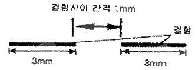

침투비파괴검사기능사 (2012-04-08 기출문제)
1과목: 침투탐상시험법(대략구분)
1. 다음 자분탐상시험법 중 선형 자화법을 이용하는 것은?
- 극간법
- 프로드법
- 직각통전법
- 전류관통법
(정답률: 68%)

2. 침투탐상시험으로 미세한 균열을 검출하는데 가장 검출 감도가 좋은 탐상 방법은?
- 수세성 형광침투탐상시험
- 후유화성 형광침투탐상시험
- 용제제거성 염색침투탐상시험
- 용제제거성 형광침투탐상시험
(정답률: 67%)
3. 침투탐상시험으로 습식현상제를 사용할 때 현상제에 대하여 반드시 점검하여야 할 사항은?
- 현상제를 감안한 전처리 시간
- 현탁액이 균일한가를 점검
- 현상제의 질량과 시험편의 건조상태
- 자외선조사등
(정답률: 52%)
4. 다음 중 매질 내의 음속을 결정하는 인자들로 구성된 것은?
- 주파수 및 탄성율
- 탄성율 및 밀도
- 매질 두께 및 밀도
- 조직입도 및 두께
(정답률: 44%)
5. 침투탐상시험의 특성에 대한 설명 중 틀린 것은?
- 큰 시험체의 부분 검사에 편리하다.
- 다공성인 표면의 불연속 검출에 탁월하다.
- 표면의 균열이나 불연속 측정에 유리하다.
- 서로 다른 탐상액을 혼합하여 사용하면 감도에 변화가 생긴다.
(정답률: 80%)
6. 주강품에 대한 비파괴시험에서 발견할 수 있는 결함이 아닌 것은?
- 균열
- 블로우홀
- 수축공
- 라미네이션
(정답률: 59%)
7. 방사선 투과사진의 명암도에 영향을 주는 인자 중 시험체 명암도에 영향을 주는 인자와 거리가 먼 것은?
- 현상 조건
- 산란방사선
- 방사선의 선질
- 시험체의 두께차
(정답률: 45%)
8. 다음 중 원리가 같은 검사 방법끼리 조합된 것은?
- 방사선투과검사(RT), 컴퓨터단층촬영(CT)검사
- 육안검사(VT), 자분탐상검사(MT)
- 침투탐상검사(PT), 와전류탐상검사(ECT)
- 초음파탐상검사(UT), 누설검사(LT)
(정답률: 74%)
9. 초음파탐상시험에 사용되는 탐촉자의 표시방법에서 진동자 재료 중 수정을 나타내는 것은?
- C
- M
- Q
- Z
(정답률: 60%)
10. X- 선에 관한 설명한 것 중 틀린 것은?
- 표적금속의 종류에 의해 정해진다.
- 단일 에너지를 가진다.
- 파장은 관전압이 바뀌어도 변하지 않는다.
- 연속 스펙트럼을 가진다.
(정답률: 48%)
11. 다음 중 방사선투과시험과 초음파탐상시험에 대한 비교 설명으로 틀린 것은?
- 방사선투과시험은 시험체 두께에 영향을 많이 받으며, 초음파탐상시험은 시험체 조직 크기에 영향을 받는다.
- 방사선투과시험은 방사선안전관리가 필요하고, 초음파탐상시험은 방사선안전관리가 필요하지 않다.
- 방사선투과시험은 촬영 후 현상과정을 거쳐야 판독가능하고, 초음파탐상시험은 검사 중 판독이 가능핟.
- 방사선투과시험은 결함의 3차원적위치 확인이 가능하고, 초음파탐상시험은 2차원적 위치확인이 가능하다.
(정답률: 61%)
12. 초음파탐상기에 요구되는 성능 중 수신된 초음파 펄스의 음압과 브라운관에 나타난 에코 높이의 비례관계 정도를 나타내는 것은?
- 시간축 직선성
- 분해능
- 증폭진선성
- 감도
(정답률: 54%)
13. 외경이 24mm, 두께가 2mm인 시험체를 평균 직경이 18mm인 내삽형코일로 와전류탐상검사를 할 때 충전율은 얼마인가?
- 67%
- 75%
- 81%
- 90%
(정답률: 48%)
14. 다음 비파괴검사법 중 전처리 과정이 생략되었을 때 결함의 검출감도에 가장 크게 영향을 미치는 시험법은?
- PT
- UT
- RT
- 중성자투과시험
(정답률: 61%)
15. 다음 중 용제세척법으로 전처리할 경우 제거가 곤란한 오염물은?
- 확스 및 밀봉재
- 그리스 및 기름막
- 페인트와 유기성 물질
- 용접 플럭스 및 스패터
(정답률: 75%)
16. 용제제거성 침투탐상에서 사용되는 용제세척에 대한 설명으로 틀린 것은?
- 용제는 용해하는 성질이 있기 때문에 다량으로 사용하면 결함내의 침투액을 제거하므로 주의해야한다.
- 시험면에서 용제를 직접 분사하거나 용제가 들어 있는 용기에 침적하는 조작은 피해야한다.
- 붓칠 등으로 유화제와 침투액이 뒤섞이게 하는 것은 피해야한다.
- 표면이 거친 형상은 손으로 닦아내기가 곤란한 경우는 분사압력을 최대로 하여 시험부위에 용제를 뿌려주고 즉시 헝겊으로 닦아낸다.
(정답률: 72%)
17. 다음 중 침투탐상시험에 대한 설명으로 옳은 것은?
- 현상시간은 침투시간의 약 5배 이상이어야 한다.
- 침투제는 시험체에 적용한 후 반드시 가열하여야 한다.
- 건조기의 온도가 너무 높으면 그 영향으로 침투효과가 저하된다.
- 샌드블라스팅은 침투탐상할 표면을 세척하는데 가장 일반적으로 사용되는 전처리 방법이다.
(정답률: 70%)
18. 침투탐상검사에서 사용되는 용어 중 “배액시간”에 대한 설명으로 옳은 것은?
- 현상제를 적용하고 지시모양의 관찰을 시작하기 전까지의 시간
- 결함지시모양을 만들기위해 결함 내부로 침투하는 유체
- 침투지시모양을 나타내기 위해 시험체 표면에 적용하는 미세한 분말 및 현탁액
- 시험체를 침투제에 계속 침적시키지 않고 표면의 잉여침투제가 흘러 내리도록 하는 시간
(정답률: 70%)
19. 다음 중 침투탐상검사에 온도에 대한 설명으로 옳은 것은?
- 시험체의 온도가 높아지면 침투액의 침투속도가 빨라진다.
- 시험체의 온도가 높아지면 침투액의 이동속도가 느려진다.
- 시험체의 온도가 높아지면 침투액의 점성이 증가한다.
- 시험체의 온도가 높아지면 침투액의 표면장력이 증가한다.
(정답률: 68%)
20. 모세관 현상에서 모세관 속의 액체가 상승하는 높이와 직접적인 관련이 없는 것은?
- 적심성
- 관의 지름
- 관의 길이
- 액체의 표면 장력
(정답률: 50%)
2과목: 침투탐상관련규격(대략구분)
21. 수세성 형광침투액과 건식현상제를 사용하는 경우 시험절차 순서가 적절한 것은?
- 침투→유화→세척→건조→현상→관찰→후처리
- 전처리→침투→세척→건조→현상→관찰→후처리
- 전처리→세척→침투→건조→현상→관찰→후처리
- 전처리→침투→세척→현상→건조→관찰→후처리
(정답률: 69%)
22. 의시지시모양이 나타내는 원인으로 적절하지 않은 것은?
- 시험면에 대한 전처리가 부족한 경우
- 잉여 침투액이 시험면에 남아 있는 경우
- 현상제를 너무 많이 시험면에 적용한 경우
- 검사원의 손에 묻어있는 침투액이 시험면에 묻은 경우
(정답률: 52%)
23. 침투액 적용방법 중 가장 안정적인 적용방법이며, 균일하게 도포할 수 있고 과잉 분무가 되지 않으며, 불필요하게 흘러내리는 침투액이 없어 침투액의 손실을 최소화 할 수 있는 방법은?
- 분무법
- 붓칠법
- 정전기식 분무법
- 침적법
(정답률: 54%)
24. 다음 침투탐상검사법 중 제거방법이 다른 것은?
- 수세성 형광침투탐상검사
- 후유화성 형광침투탐상검사
- 후유화성 염색침투탐상검사
- 용제제거성 염색침투탐상검사
(정답률: 78%)
25. 현상제의 작용에 대한 내용으로 옳지 않은 것은?
- 표면 개구부에서 침투제를 빨아내는 흡출작용을 함.
- 배경색과 색대비를 개선하는 작용을 함.
- 현상막에 의해 결함지시모양을 확대하는 작용을 함.
- 자외선에 의해 형광을 발하므로 형광침투액 사용시 결함지시의 식별성을 높임
(정답률: 43%)
26. 침투탐상시험시 검사체의 결함은 언제 판독하는가?
- 현상시간이 경화한 직후
- 침투처리를 적용한 직후
- 현상제를 적용하기 직전
- 세척처리를 적용하기 직전
(정답률: 76%)
27. 수세성 침투탐상검사에서 배액처리를 실시하는 것이 원칙인 경우는?
- 전처리에서 알카리 세척을 할 때
- 침투처리에서 침적법을 할 때
- 침투처리에서 붓칠법을 할 때
- 전처리에서 산세척을 할 때
(정답률: 22%)
28. 침투탐상 시험방법 및 침투지시의 모양의 분류(KS B 0816)에서 밀폐된 공간에서 용접부를 침투탐상 할 때 침투제 적용방법 중 가장 효과적인 것은?
- 분무
- 침지
- 흘림
- 붓칠
(정답률: 57%)
29. 침투탐상 시험방법 및 침투지시의 모양의 분류(KS B 0816)에서 시험 장치를 가장 적게 필요로 하는 시험 방법은?
- 수세성 형광 침투액-건식 현상법
- 수세성 염색 침투액-습식 현상법
- 용제 제거성 염색 침투액-속건식 현상법
- 후유화성 역색 침투액-속건식 현상법
(정답률: 68%)
30. 침투탐상 시험방법 및 침투지시의 모양의 분류(KS B 0816)에 따라 침투지시모양이 동일 선상이고 상호간의 거리가 몇 mm이하일 때 연속침투지시모양으로 규정하고 있는가?
- 1
- 2
- 3
- 5
(정답률: 75%)
31. 침투탐상 시험방법 및 침투지시의 모양의 분류(KS B 0816)에서 시험방법의 기호가 DFC-N 일 때 사용하는 침투액과 현상법의 종류로 옳은 것은?
- 수세성 이원성 형광침투액-무현상법
- 용제제거성 이원성 형광침투액-무현상법
- 후유화성 형광침투액(물베이스유화제)-무현상법
- 후유화성 이원성 형광침투액(기름베이스유화제)-무현상법
(정답률: 72%)
32. 침투탐상 시험방법 및 침투지시의 모양의 분류(KS B 0816)에서 규정하는 유화 시간을 설명한 내용으로 틀린 것은?
- 물베이스 유화제를 사용하는 시험에서 염색 침투액을 사용할때는 2분이내
- 물베이스 유화제를 사용하는 시험에서 형광 침투액을 사용할때는 5분 이내
- 기름베이스 유화제를 사용하는 시험에서 형광 침투액을 사용할때는 3분 이내
- 기름베이스 유화제를 사용하는 시험에서 염색 침투액을 사용할때는 30초 이내
(정답률: 58%)
33. 침투탐상 시험방법 및 침투지시의 모양의 분류(KS B 0816)에서 형광침투제를 사용하는 조건으로 옳은 것은?
- 밝은 실내에서 행해져야 한다.
- 현상처리 적용 후 침투제를 적용하여야 한다.
- 어두운 곳, 자외선조사등 하에서 행해져야 한다.
- 시험체 온도가 –20~4°C사이에서 행해져야 한다.
(정답률: 90%)
34. 침투탐상 시험방법 및 침투지시의 모양의 분류(KS B 0816)에 규정된 검사 방법의 적용 대상이 아닌 것은?
- 임실을 사용할 경우 어둡기는 10룩스 미만이어야 한다.
- 세척처리시 수세성 및 후유화성 침투액은 물로 세척한다.
- 침투지시모양의 관찰은 현상제 적용 후 7~60분 사이에 하는 것이 바람직히다.
- 잉여 침투액의 제거시 홈 속에 침투되어 있는 침투액을 유출시키는 과도한 처리를 해서는 안된다.
(정답률: 76%)
35. 항공우주용 기기의 침투탐상 검사방법(KS W 0914)에 규정된 검사 방법의 적용 대상이 아닌 것은?
- 시료 검사
- 정비 검사
- 최종 검사
- 공정 중 검사
(정답률: 48%)
36. 항공우주용 기기의 침투탐상 검사방법(KS W 0914)에 속건식 현상제에 관한 설명 중 틀린 것은?
- 구성 부품은 현상제를 적용하기 전에 건조시켜야한다.
- 현탁성이 있는 비수성 현상제는 적용하기 전 교반하여야 한다.
- 비수성 현상제는 흘려보내기 또는 침지에 의해 적용하여야 한다.
- 현상제의 체류시간은 최소 10분 동안 최대 1시간으로 하여야 한다.
(정답률: 34%)
37. 침투탐상 시험방법 및 침투지시의 모양의 분류(KS B 0816)에서 강용접부의 결함 검출을 위해 5분 표준 침투시간을 필요로 하는 온도 범위는?
- 5~50°C
- 10~50°C
- 15~50°C
- 20~50°C
(정답률: 79%)
38. 침투탐상 시험방법 및 침투지시의 모양의 분류(KS B 0816)에서 침투지시 모양을 관찰하는 시간 범위는?
- 현상제 적용 후 7~30분 사이
- 현상제 적용 후 7~60분 사이
- 현상제 적용 후 10~30분 사이
- 현상제 적용 후 10~60분 사이
(정답률: 78%)
39. 침투탐상 시험방법 및 침투지시의 모양의 분류(KS B 0816)에 따라 시험체의 일부분을 시험하는 경우 전처리해야 하는 범위의 규정으로 옳은 것은?
- 시험부 중심에서 바깥쪽으로 20mm까지
- 시험부 중심에서 바깥쪽으로 50mm까지
- 시험하는 부분에서 바깥쪽으로 25mm 넓은 범위
- 시험면이 인접하는 영역에서 오염물에 의한 영향을 받지 않는 50mm이상의 넓이
(정답률: 81%)
40. 침투탐상 시험방법 및 침투지시의 모양의 분류(KS B 0816)에 의해 강용접부를 탐상시험 하였더니 그림과 같은 결함이 거의 동일 선상에 나타났다. 이 결함은 어떻게 판정하며, 또한 결함 길이는 몇 mm인가?(오류 신고가 접수된 문제입니다. 반드시 정답과 해설을 확인하시기 바랍니다.)

- 2개로 판정하며, 각각 길이는 4, 3
- 1개로 판정하며, 각각 길이는 6
- 1개로 판정하며, 각각 길이는 7
- 3개로 판정하며, 각각 길이는 3, 1, 3
(정답률: 74%)
3과목: 금속재료일반 및 용접일반(대략구분)
41. 침투탐상 시험방법 및 침투지시의 모양의 분류(KS B 0816)에 따라 형광 침투액을 사용하는 시험에서 관찰자가 어두운 곳에서 눈을 적응시키기 위해 규정된 최소 시간은?
- 30초 이상
- 1분 이상
- 5분 이상
- 10분 이상
(정답률: 78%)
42. 침투탐상 시험방법 및 침투지시의 모양의 분류(KS B 0816)에서 강단조품의 랩(lap)결함을 검출하고자 할 때 일반적을 적용하는 표준 침투시간은?
- 5분
- 7분
- 10분
- 20분
(정답률: 53%)
43. 가공용 다이스나 발동기용 밸브에 많이 사용하는 특수합금으로 주조한 그대로 사용되는 것은?
- 고속도강
- 화이트 메탈
- 스텔라이트
- 하스텔로이
(정답률: 48%)
44. 공정주철의 탄소 함유량은 약 몇 % 인가?
- 0.2%
- 0.8%
- 2.1%
- 4.3%
(정답률: 44%)
45. 납 황동은 납을 첨가하여 어떤 성질을 개선한 것인가?
- 강도
- 내식성
- 절삭성
- 전기전도도
(정답률: 59%)
46. 면심입방격자(FCC)에 관한 설명으로 틀린 것은?
- 원자는 2개이다.
- Ni, Cu, Al 등은 면십임방격자이다.
- 체심입방격자에 비해 전연성이 좋다.
- 체심입방격자에 비해 가공성이 좋다.
(정답률: 66%)
47. 림드강에 관한 설명 중 틀린 것은?
- Fe-Mn으로 가볍게 탈산시킨 상태로 주형에 주입한다.
- 주형에 접하는 부분은 빨리 냉각되므로 순도가 높다.
- 표면에 헤어크랙과 응고된 상부에 수축공이 생기기 쉽다.
- 응고가 진행됨녀서 용강 중에 남은 탄소와 산소의 반응에의하여 일산화탄소가 많이 발생한다.
(정답률: 37%)
48. 응축계인 금속은 대기압하에서 어떠한 인자를 무시하여 자유도를 구할 수 있는가?
- 상
- 압력
- 농도
- 온도
(정답률: 60%)
49. Mg-희토류계 합금에서 희토류계원소를 첨가할 때 미시메탈(Misch-metal)의 형태로 첨가한다. 미시메탈에서 세륨(Ce)을 제외한 합금 원소를 첨가한 합금의 명칭은?
- 탈타늄
- 디디뮴
- 오스뮴
- 갈바늄
(정답률: 39%)
50. 주철에 대한 설명으로 틀린 것은?
- 흑연은 메짐을 일으킨다.
- 흑연은 응고에 따라 편상과 괴상으로 구분한다.
- 시멘타이트가 많으면 절삭성이 향상된다.
- 주철의 조직은 C와 Si의 양에 의해 변화한다.
(정답률: 59%)
51. 알루미늄 합금 중 대표적인 단련용 Al합금으로 주요성분이 Al-Cu-Mg 인 것은?
- 알민
- 알드리
- 두랄루민
- 하이드로날륨
(정답률: 71%)
52. 결정구조결함의 일종인 빈자로 인하여 전체 금속이온의 위치가 밀리게 되고 그 결과로 인하여 구조적인 결함이 발생하는 이러한 결함의 명칭은?
- 전위
- 시효
- 산세
- 서출
(정답률: 72%)
53. 저용융점 합금이란 약 몇 °C 이하에서 용융점이 나타나는가?
- 250°C
- 350°C
- 450°C
- 550°C
(정답률: 62%)
54. Cu에 3~4% Ni 및 1% Si를 첨가한 합금으로 금속간 화합물 Ni2Si를 생성하며 시효경화성을 가진 합금은?
- 켈밋합금
- 코슨 합금
- 망가닌 합금
- 애드리럴티 합금
(정답률: 40%)
55. 다음 중 냉간 가공도가 증가할수록 감소하는 것은?
- 경도
- 내력
- 연신율
- 인장강도
(정답률: 62%)
56. 다음성 자성 재료 중 연질 자성 재료에 해당되는 것은?
- 알니코
- 네오디뮴
- 센더스트
- 페라이트
(정답률: 43%)
57. 합금주강에 관한 설명으로 옳은 것은?
- 니켈 주강은 경도를 높은 목적으로 2.0~3.5% 정도 Ni을 첨가한 합금이다.
- 크롬 주강은 보통 주강에 10% 이상의 Cr을 첨가하여 강인성을 높인 합금강이다.
- 니켈-롬 주강은 피로 한도 및 충격값이 커 자동차, 항공기 부품 등에 사용한다.
- 망간 주강에서 Mn을 11~14% 함유한 마텐자이트계인 저망간주강은 뜨임처리하여 제치용 롤 등에 사용한다.
(정답률: 45%)
58. 다음 중 맞대기 용접의 홈 형상이 아닌 것은?
- H
- I
- R
- K
(정답률: 56%)
59. 다음 중 균열에 대한 감수성이 특히 좋아서 두꺼운 판 구조물의 용접 혹은 구속도가 큰 구조물, 고장력강 및 탄소나 황의 함유량이 많은 강의 용접에 가장 적합한 용접봉은?
- 고셀롤로오스계-E4311
- 저수소계-E4316
- 일루미나이트계-E4301
- 고산화티탄계-E4313
(정답률: 47%)
60. 다음 중 두께가 3.2mm인 연강 판을 산소·아세틸렌가스 용접할 때 사용하는 용접봉의 지름은 얼마인가? (단, 가스 용접봉 지름을 구하는 공식을 사용한다.)
- 1.0mm
- 1.6mm
- 2.0mm
- 2.6mm
(정답률: 49%)